Kendo practice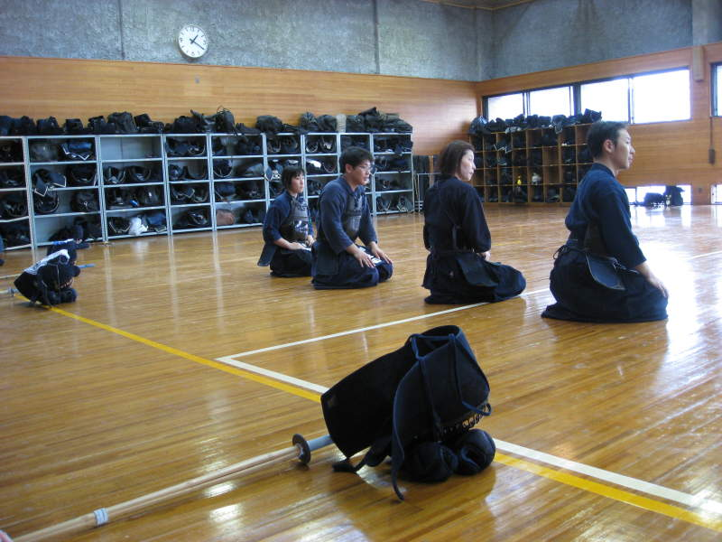
Courtesy
of Paul and his contacts, we were allowed to enter a Japanese police
station and see some of the world's best kendo masters practice their
technique. In case you don't know, kendo is Japanese fencing.
They use bamboo swords that have the same weight and balance as a
katana. Their strikes are accompanied by loud gutteral sounds
somewhere between a grunt and a scream. Thanks to some experience
with aikido, I had a feel for some of what I was watching. There
are only a few basic strikes in kendo. Mainly the hand, the face,
and the stomach. The real art to kendo is not just the motions
and the form. It's being able to read your opponent and react
quickly enough. Each person is different, and a large part of it
is gaining control of your own tendencies that an enemy may exploit or,
if it's a good thing, that you may use to your advantage.
Absolutely fascinating once you get into it, as I believe most
martial arts have at least some degree of this aspect. I've seen
Paul on occasion use his technique in Renaissance Faire fencing
competitions and he's pretty bad-ass. That said, wearing the
armor required for kendo seems like a PAIN in the ass, and I'm glad I
chose the far more portable aikido. Unfortunately, Paul was not
able to join the practice because of the difficulties with lugging his
armor all around Japan. He does plan to go back, however, and I hope he gets another chance.
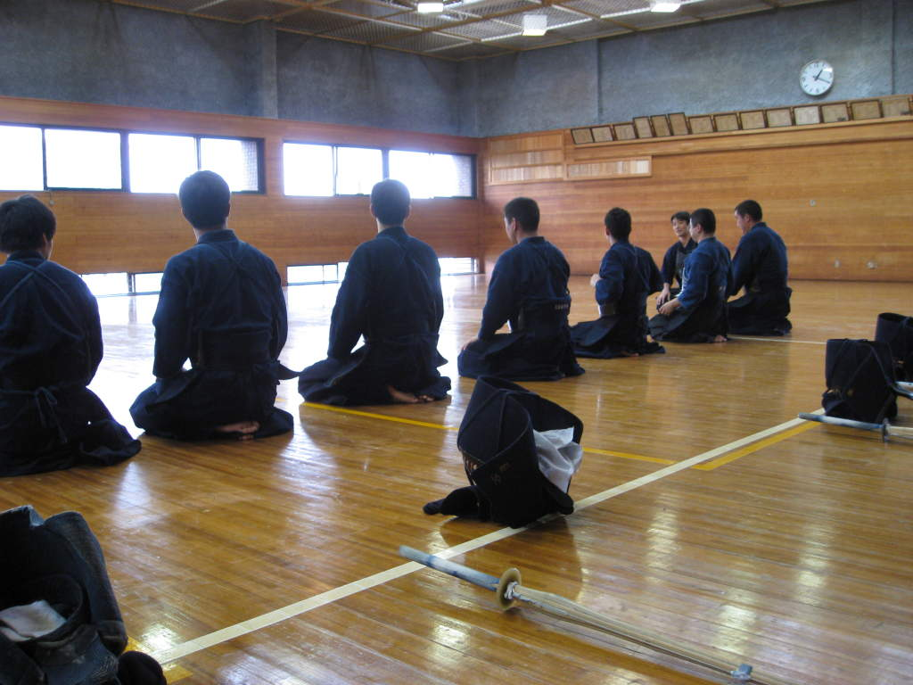
Kendo students line up, sitting "seiza", in preparation for the start of the practice session.
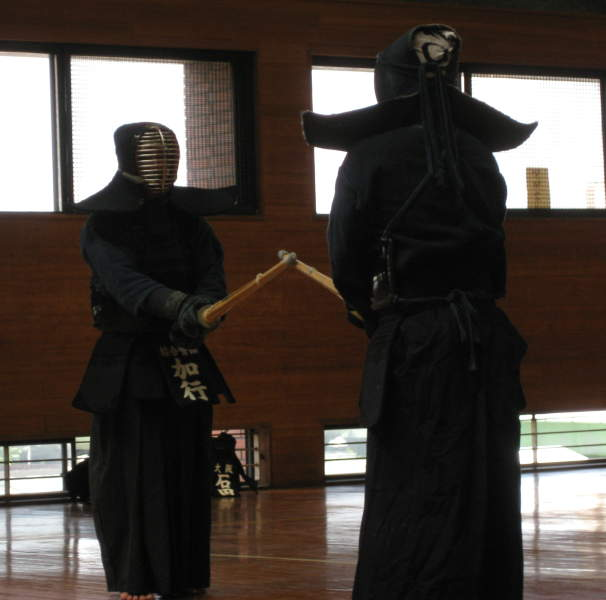
These two are gauging each other's balance and readiness, searching for weak points.
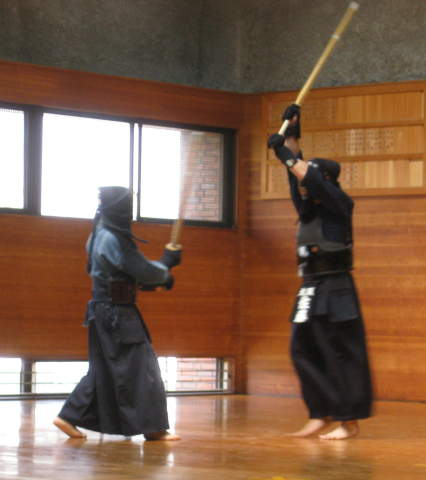
Sometimes
the best strategy is to reach up high and try to bop your opponent on
the head. There are actually different styles of kendo, and some
prefer to start with the sword up high. Others start with the
sword pointing outward, like in the last picture. I'd imagine it
might be harder to gauge the reach of someone with their sword lofted
upward. If you're wondering what they'd do in a room with a low
ceiling, I can answer this. Paul invited some kendo students to
his condo for New Year's once. His ceiling got carved up worse
than a scratching post in a tiger's den.
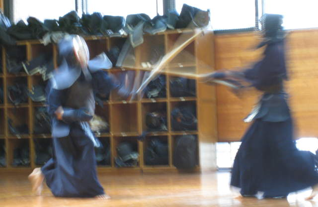
When you get good enough at kendo, you can make it very difficult to take pictures of you.
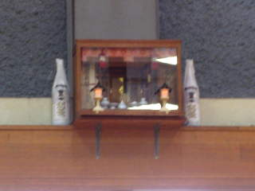
Paul
explained the symbolism of this, which was mounted high on a wall in a
dojo, but I forgot what he told me. I wonder if it's bad to look
at this and see two bottles of Malibu.
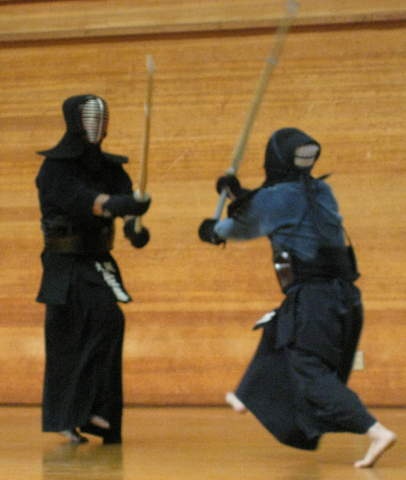
It
looks to me like the aggressor is staying lower than would feel
natural. This might be to get a better lunge, since when you're
lower, your legs have more reach and can lunge more powerfully.
Perhaps the attacker is staying low to avoid being cracked on the
head. The defender doesn't look too worried, however. By my
estimation, the defender is going to swing, and going to swing hard at
the best possible spot to swing at, while moving ever so slightly, just
enough to avoid the attack.
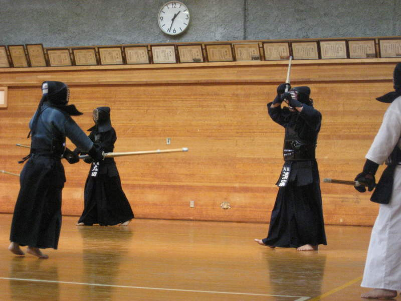
Here are the two different stances I was talking about.
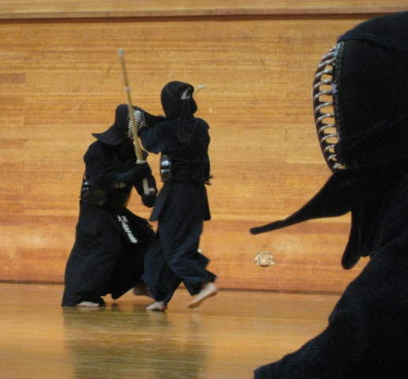
Often, one can learn a lot by simply observing. Observing is less painful too.
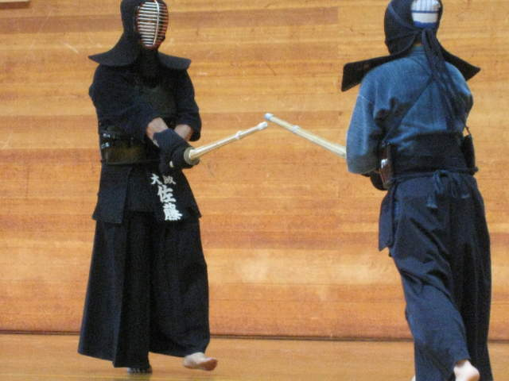
The
Japanese, historically, have a tendency to emulate the strongest.
Their Japanese characters (kanji) were derived from Chinese.
The Chinese at the time were certainly a relatively strong
nation, and the Japanese admired them. Well, this is the same in
kendo as well. The one in black is one of the best, and is
leading this practice session. During the practice, people rush
over to him to challenge him, before anyone else, because he is the
best in the dojo, and the greatest challenge, especially early on,
before he wears down at all.
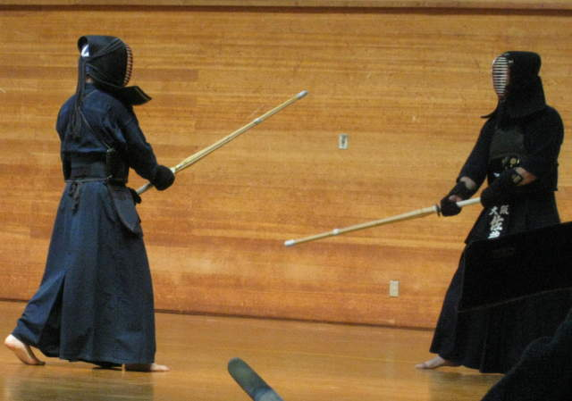
Whoever strikes and hits first wins. There is far less blocking than you might see in the movies.
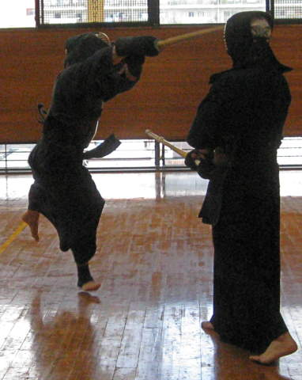
Sometimes I imagine blocking might be in order.
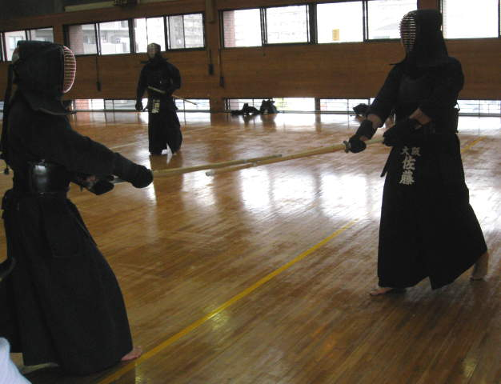
Two
opponents usually circle around, keeping their swords near each other,
until the attack. By the way, the symbols hanging from their
waists signify the primary dojos they study at.
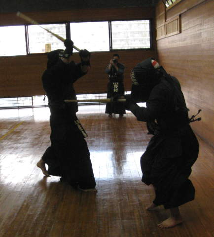
One's going for the face, or maybe the hand. The other is slashing across the stomach.
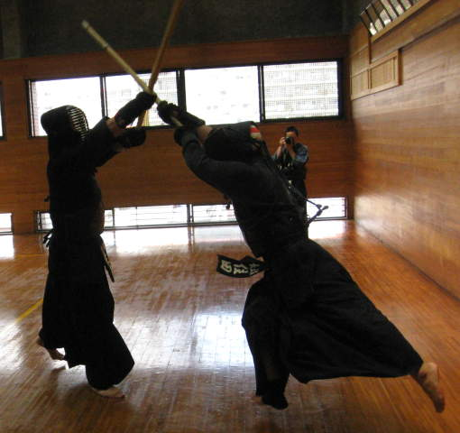
There
was a local with a camera other than me snapping a lot of pictures
during this practice. Sometimes we snapped pictures of each other
too.
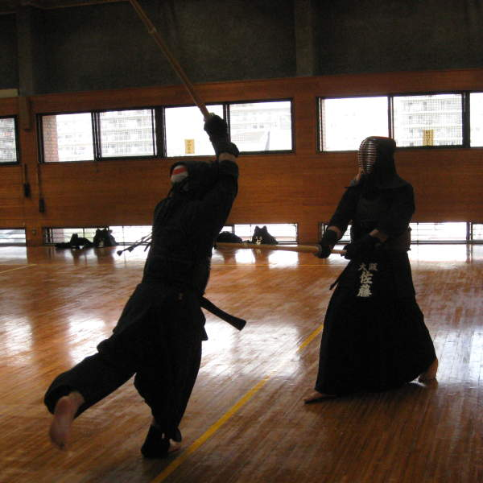
The
sensei had great success yet didn't move very much. This gave him
a large advantage by using less energy than, say, the guy on the left.
Just like the aikido dojo in Nagoya that I visited, it was very
hot in this dojo/gymnasium as well. That and the armor
didn't make a good combination for their personal comfort. At the
end of the practice, the sensei approached us on our way out. He
said he could teach us kendo too, and I believe him. My heart is
with aikido, and on occasion, they let us play with swords too.
Back